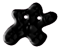

Inspiration

You again? Hi. I am surprised to see you back so soon.
You must really like it here.
Um, I am glad to see you are okay too... you heard about the riots? What riots? No, there were no riots here. Oh, you met Pinky? Yea, don't believe anything Pinky says. Pinky is a bold-faced liar.
Are you here to be inspired by the Inspiration page? It isn't quite finished yet.
I'm so sorry. You were probably excited to visit a page filled with inspiration but instead, all you got was a page filled with disappointment.
Hey, I think the moment is still salvageable. Take a look at the gorgeous banner image. Isn't that pretty inspirational? I would say so. Fun fact: the banner image was the driving force behind our website color choices. Do you like them? Yea, too many pinks, methinks. I'm terribly partial to the color of my caravan - periwinkle blue.
Anyways, can you develop a story based on the banner image? It is just like describing an inkblot - use your imagination.
At first glance, it looks like someone wandering in the desert at sunset. Lost, afraid, sad, perhaps. That is a story right there, you can unfold it by asking and answering questions. Who is this person? Why are they in the desert? How did they get here? Why didn't they just stay home and build websites? Where are they going? What year is it? What is going to happen? So many questions!
The silhouette is gender-neutral so your imagination gets to decide who the person is. If you look closer at the image, you will actually realize it isn't the desert in the background; but a city on a river. The silhouetted person is standing on a roof and the river is a backdrop.
So with this new perspective, a whole new story emerges. Why are they on a roof? What city is this? Is it the future? Why is this person looking down instead of at the beautiful sunset? Are they sad? Are they in danger?
See, a picture really does paint a thousand words! Sigh... I'm sorry if that wasn't very inspirational. Well, back to work!